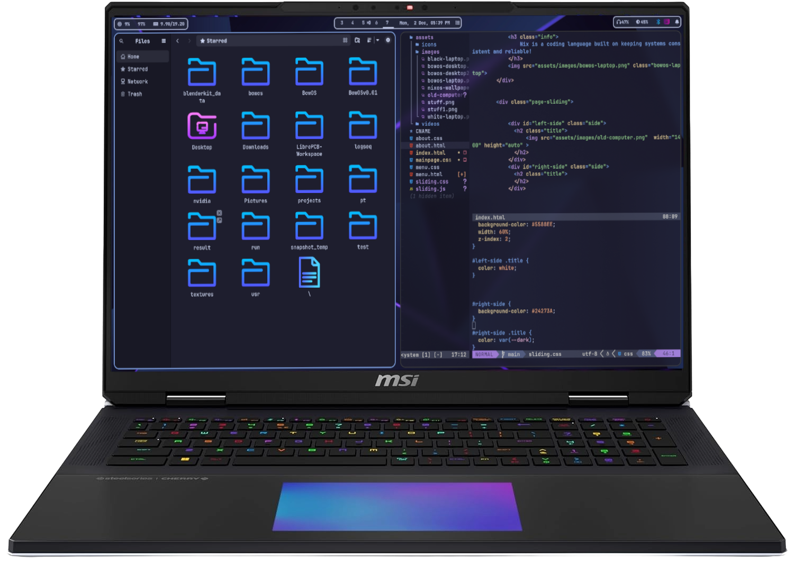
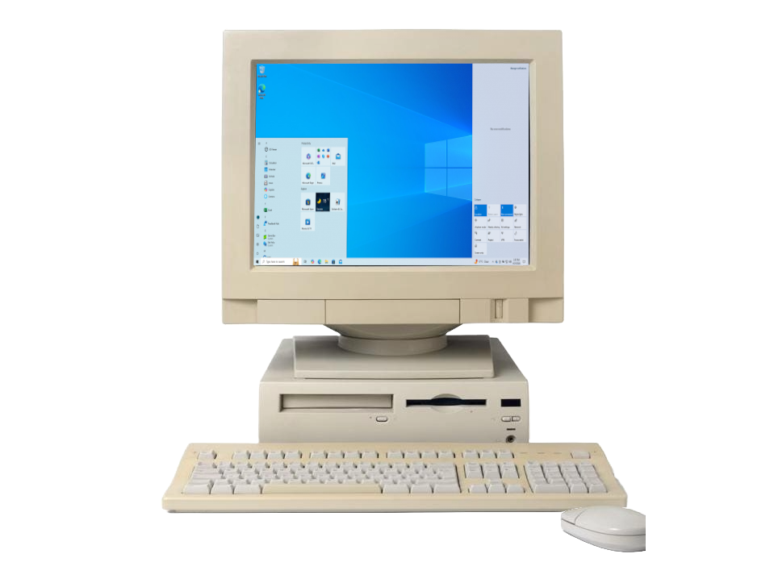

This is BowOS
Your browser does not support the video tag.
Powered By Nix!
Nix is a coding language built on keeping systems consistent and reliable!
New and Shiny 
Old and Cruddy 
Using Hyprland Windows Manager
Your browser does not support the video tag.